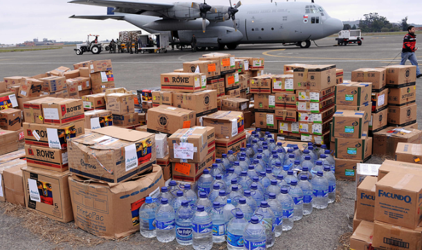

Voluntariado y Capacitaciones
Inscripciones y Requisitos aquíNuestro país se encuentra en el famoso "Cinturón de Fuego del Pacífico", donde las probabilidades de ser victimas de un sismo de gran magnitud son muchas. Nuestro país tras varios estudios se conoce que no se encuentra preparado para asistir un sismo de este tipo, por lo que se requiere bastante ayuda de voluntarios que estén dispuestos a apoyar a la población más vulnerable antes, durante y después de la tragedia.
Hagamos un cambio, ven y únete!
Leer más
